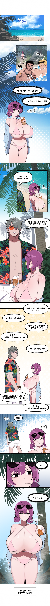

ㅇㅎ?) 바닷가로 끌려온 겜순이 만화.manhwa
댓글
너무 크니까 무슨 병걸린거 같네 코끼리병


원래도 가슴 큰애가 아예 2배가 되서 왔네
종양덩어리네
기괴하네 너무큰건
그렇다고하기엔 ㅈㄴ 빡세게 꾸몄는데
어흐


뭔 가슴으로 임신했냐
가슴무게가 가슴을뺀 몸무게보다 더 나갈듯
저정도면 무게때문에 수영복에 잘리것다 시부럴거

이건 너무 ㅋㅋㅋㅋㅋ
이건 좀;
점점 더 커지는거같냐ㅋㅋㅋ
아니 무슨 피서를 게이도라도로 가는거야..
가슴 광합성으로 키우는 거냐
아니ㅋㅋㅋㅋ2컷부터 괴리감 쩌네

원래 이정도는 아니었던 것 같은데..
시급한 축소 수술이 필요합니다